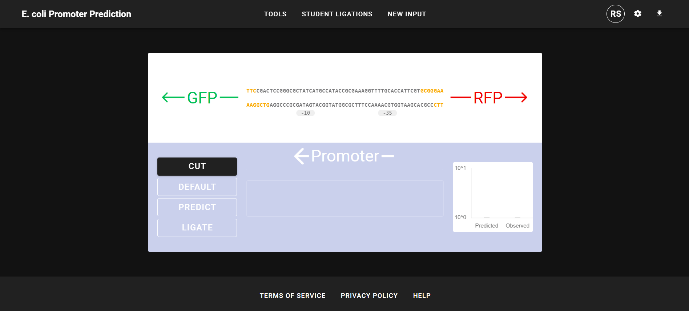

Predictive Artificial Neural Networks for mRNA Transcriptional Profiles and Sequence Motifs
| Background |
For the current version, see the frontend For more information, see the GitHub repository A foundational goal of molecular microbiologists over the last 80 years has been to understand how genetic information carried in DNA is manifested in a unique and orderly manner. We now know that this is a complex and highly regulated two-step process that can rapidly adjust to a changing cellular environment. First, the genetic information is transcribed onto a mRNA intermediate via transcription, and second, the mRNA is decoded into proteins through translation. Regulation at each step of this central dogma determines the relative amounts of proteins produced. These changes in protein profile define the biochemical characteristics and adaptive potential of the cell over time. mRNA synthesis in all organisms is performed by the RNA polymerases (RNAP). The rate of mRNA synthesis is an essential parameter in gene expression and is partially determined by how often and how well RNAP binds to the promoter sequence, an untranslated cis-regulatory element upstream of the gene. Researchers have already developed machine-learning tools to predict the transcription initiation rates in E. coli based on RNAP/σ70-promoter interactions. However, current prediction tools lack robustness and are prone to high error. These models are trained on limited datasets and/or are trained on select sections of promoter sequences. |
| Research |
This research was the initial stage of my work for Professor Matthew Tien, where we used deep machine learning as a teaching method for undergraduate students to learn about the relationship between promoters and phenotypes. In a new introductory biology laboratory course, first-year students will experience their first course-based undergraduate research experience (CURE): to design synthetic E. coli promoter sequences and test the expression of their promoter sequences. For this lab, I trained a more robust convolutional neural network on several publicly available datasets that explored the sequence space of E. coli promoter sequences. For tuning, I used heuristic and hyper-parameter-turning neural network strategies to build our final deep-learning model. This model has a mean squared error 44% lower than machine learning models trained on the same data and, unlike other models, can receive DNA sequences of variable length. I also built a web-based graphical user interface (GUI) that houses our deep-learning model, which allows users to input promoter DNA sequences and returns a quantitative prediction of the promoter’s ability to drive gene expression. The GUI helps students design non-canonical promoter sequences and lets them compare their results with the deep-learning model’s prediction of their promoter sequences. Before the lab, students will use the GUI to design a synthetic promoter, step through the Golden Gate Assembly process in silico, and obtain predictions of synthetic promoters' effect on gene expression. Then, students will upload their fluorescence intensity results and compare them with the deep-learning model’s results in the GUI. The GUI acts as an iterative database, meaning newly uploaded student-generated data will be used to retrain our deep-learning model of bacterial transcription. |